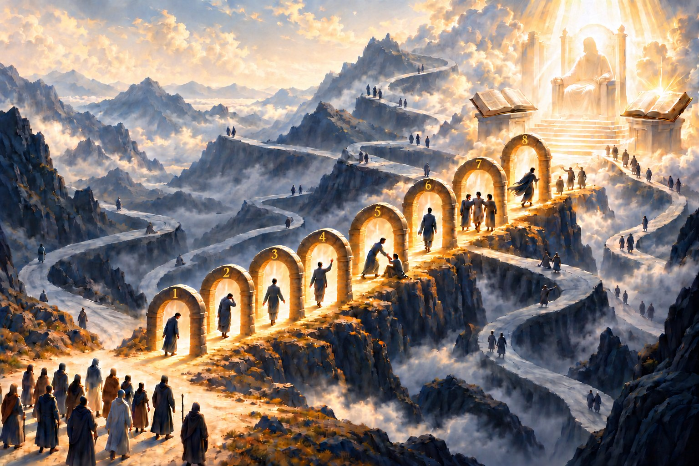

BACKUP da versão anterior · guardada antes da publicação de 26/10/2026 ·
ver a versão atual desta página
Meditações
Quem sou eu
Sobre

← O caminho e as portas
Passe o mouse sobre uma porta e clique para abrir a bem-aventurança.
Toque numa porta para selecionar, toque de novo para abrir.